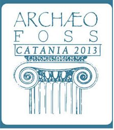

Quattro giorni dopo Opening the Past , 1200 chilometri più a sud, il mondo accademico dell’archeologia ci chiama ancora: l’edizione 2013 di ArcheoFOSS va in scena a Catania il 18 e il 19 giugno e noi non vogliamo mancare all’ottava edizione del workshop su “Free, Libre and Open Source software e Open Format nei processi di ricerca archeologica”. Due momenti si rivelano particolarmente interessanti per noi: la sessione intitolata “Verso una visione aperta del patrimonio culturale archeologico” e il barcamp finale sul riuso dei dati archeologici.
{kind=link}
La prima sessione mi fa pensare : “allora non siamo soli!”. OpenPompei infatti non è l’unico progetto che sta cercando di sensibilizzare le Soprintendenze verso la trasparenza e l’apertura dei dati. Da nord a sud alle isole ci sono tante esperienze, la maggior parte agli esordi come noi, che con modalità diverse e step operativi differenti si stanno muovendo verso questa direzione partendo frequentemente dalla volontà di creare dei Sistemi Informativi Territoriali o delle mappe del patrimonio archeologico da aprire inizialmente solo agli addetti ai lavori con l’intenzione di integrare dataset di open data in una seconda fase del progetto e dunque non limitare più l’accessibilità. Questo è il percorso prospettato da SIUrBE 2.0, il sistema informativo del patrimonio archeologico urbano di Benevento, per il quale però non si è ancora raggiunto un accordo con la Soprintendenza di Benevento; stesso percorso però con un accordo già firmato è quello del Polo sardo del Sitan (Sistema Informativo Territoriale archeologico nazionale) che sta lavorando ad un mappa dettagliata del patrimonio archeologico sardo nella quale convergeranno i dati dei dipartimenti universitari, della Regione, dei Comuni e delle Soprintendenze che hanno già firmato l’accordo quadro e si sono impegnate non solo a fornire i dati, ma anche a formare il personale incaricato di gestire il progetto. Segue la stessa linea, ma è in fase un po’ più avanzata dei precedenti, il progetto SITAR nato nel 2007 per volontà della Soprintendenza Speciale per i Beni Archeologici di Roma che ha due finalità principali: la costituzione di un catasto digitale archeologico per il territorio metropolitano di Roma e di Fiumicino e la sperimentazione di un sistema avanzato per l’elaborazione e la multi-rappresentazione della conoscenza archeologica pensato anche per supportare le azioni di co-pianificazione e lo sviluppo socio-economico del territorio. Attualmente l’accesso ai dati è riservato solo agli addetti ai lavori, ma i responsabili del progetto dicono di essere al lavoro anche sulle procedure di pubblicazione e di disseminazione dei dataset e delle documentazioni digitali correlate, al punto di avere oggi un rappresentante al tavolo tecnico sugli Open Data e sull’Open Source da poco istituito dal Segretariato Generale del MiBAC.
Nella stessa sessione sulla “visione aperta” del patrimonio culturale archeologico ritroviamo anche gli amici di Mappa Project, unico archivio italiano di open data archeologici attivo sino ad ora, che presentano gli esiti del loro sondaggio tramite il quale hanno cercato di cogliere il punto di vista del mondo archeologico sugli open data (abbiamo scritto un post a tal proposito qualche giorno fa). E non sono gli unici ad entrare a fondo nella questione dell’apertura dei dati: anche Piergiovanna Grossi offre un contributo molto interessante che inizia dipingendo il panorama legislativo italiano entro il quale si muove il rapporto tra archeologia e open data (dal Codice dei Beni Culturali e del Paesaggio al Codice dell’amministrazione digitale e alle leggi relative alla proprietà intellettuale). Questo panorama è stato “ringiovanito” da due passaggi legislativi importanti nel mese di marzo: l’ open by default secondo cui tutti i dati e i documenti che le pubbliche amministrazioni pubblicano con qualsiasi modalità, senza l’espressa adozione di una licenza d’uso, si intendono rilasciati come dati aperti; e il Decreto Trasparenza per il quale le pubbliche amministrazioni devono pubblicare sul sito istituzionale una serie di contenuti informativi che pongono dei vincoli stringenti sulla legittimità dei provvedimenti adottati. Questi cambiamenti dunque fanno prevedere un futuro più roseo per gli open data in Italia, anche se adesso si sente fortemente l’esigenza di linee guida per la pubblicazione dei dati di archivio e per l’apertura dei dati di nuova acquisizione, esigenza espressa anche da molti dei partecipanti ad ArcheoFOSS interessati agli open data. Alla necessità delle linee guida, secondo Piergiovanna Grossi, si associa anche l’urgenza di affrontare alcune problematiche teoriche e tecniche tra le quali: la conservazione dei dati a lungo termine per la quale i free software e gli open formats sono ancora utili, ma non rappresentano il maggior livello di libertà raggiungibile; la scelta del supporto fisico a fronte dell’obsolescenza dell’hardware e della possibilità di utilizzo di cloud systems; le licenze e i termini di servizio; l’individuazione di strumenti utili per la condivisione (wiki, piattaforme, social network); l’incentivazione all’apertura dei dati, cosa che in archeologia è ancora una pratica estremamente limitata.; l’ accompagnamento dell’elaborazione dall’alto delle linee guida con delle proposte dal basso.
Il bar camp sul riuso dei dati in archeologia nella sua prima fase conferma le elaborazioni dei dati del sondaggio di Mappa Project: chi riutilizza i dati dice di farlo per consultare e per confrontare, ponendo grande attenzione all’attendibilità dei dati e dunque alla fonte. Dagli interventi al barcamp ciò che sembra bloccare l’apertura e il riutilizzo dei dati è la questione aperta delle licenze migliori da utilizzare. E proprio le licenze sembra che stiano creando difficoltà anche a progetti di respiro europeo ai quali partecipa anche l’Italia come le piattaforme nate per l’integrazione e l’apertura di dataset provenienti da diverse parti d’Europa e del mondo, tra le quali Ariadne ed Europeana. In questo caso la situazione sembra essere ormai giunta ad un punto critico: Europeana infatti richiede l’utilizzo della licenza CC0 per rilasciare i dati, ma l’Italia non è concorde. Il rischio è che tutti i dati italiani contenuti e fruibili tramite Europena vengano oscurati a breve. E sulla licenza CC0 anche i partecipanti al barcamp hanno opinioni divergenti. Tramite tale licenza infatti si rinuncia ad ogni diritto (per questo da alcuni viene definita “non licenza”) e molti dei partecipanti al barcamp si dicono intimoriti. Ad essi Stefano Costa contrappone una visione accademica di tale licenza: la citazione della fonte e dell’autore in ambito accademico è una prassi che contribuisce a costruire l’attendibilità di una pubblicazione, per cui anche riutilizzando dati rilasciati con la licenza CC0, in ambito accademico almeno, l’autore in pratica non rinuncia ad essere citato e intanto l’utilizzo di tale licenza incentiva la diffusione dei dati abbattendo alcune difficoltà tecnico-legislative. Per incentivare l’apertura dei dati nel mondo archeologico altri due punti chiave vengono individuati: individuare strumenti adeguati, come la piattaforma Mappa Project, ed intervenire anche sul versante accademico facendo maturare il rapporto tra pubblicazioni open access e dataset open data cioè tra pubblicazioni scientifiche e tabelle di dati aperti. La tecnologia per questo non è più un problema, dicono i partecipanti al barcamp, adesso è solo una questione di volontà e di diffusione del concetto.
Il link ad ARIADNE manca di http:// iniziale. Grazie per il bel resoconto, speriamo che nei prossimi giorni ne vengano pubblicati altri per rispecchiare i tanti punti di vista diversi che si sono incontrati.
Ciao Stefano! Grazie a te per queste due giornate molto intense.
Link sistemato : )